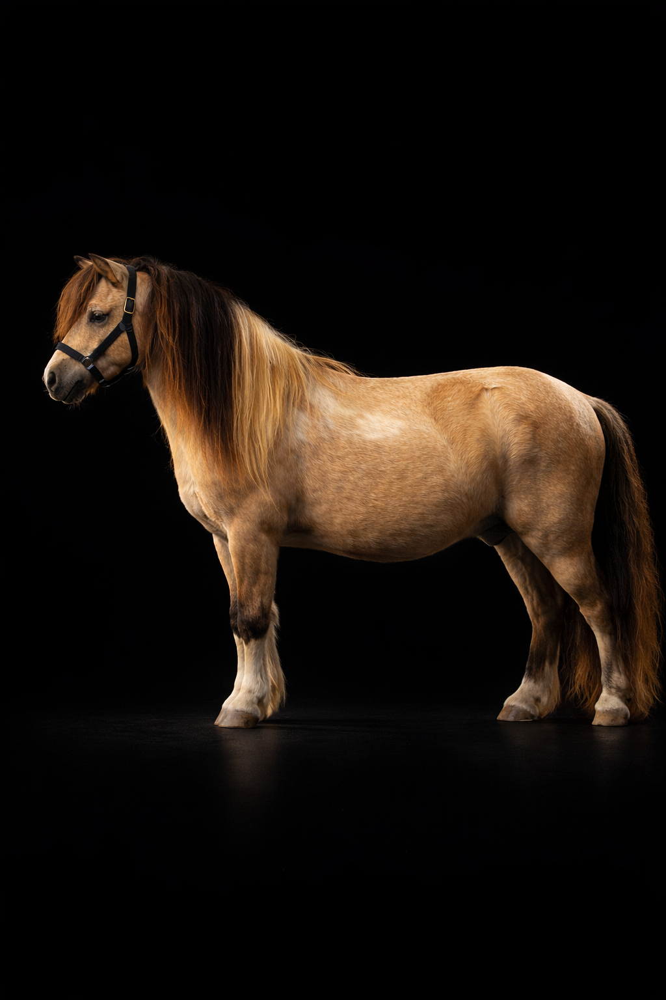

Gîte principal
Le Gîte du Négadis
2 à 6 personnes
2–3 chambres
WiFi
Terrasse
Hébergement principal du domaine — cuisine équipée, salon lumineux, terrasse avec vue sur les paddocks. Idéal pour les familles ou groupes d'amis souhaitant une immersion totale dans l'univers de l'élevage.
Vérifier les disponibilités